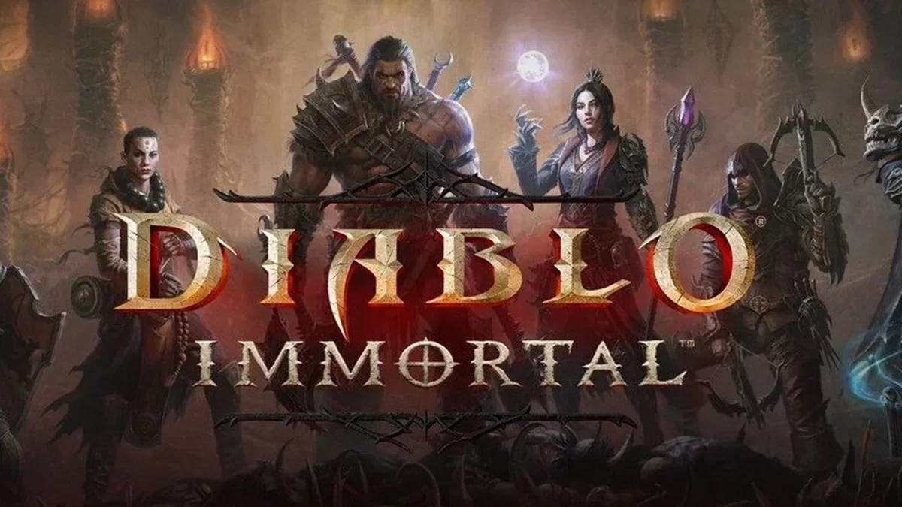

O que esperar da nova temporada de The Boys?
postado 02 de julho de 2022Nesta semana, a 3ª temporada de The Boys é o grande destaque do Amazon Prime Video. A produção, desenvolvida por Eric Kripke, promete surpreender os fãs com algumas novidades interessantes. Além da adição de Jensen Ackles e Laurie Holden ao elenco, que interpretam, respectivamente, o Soldier Boy e a Condessa Escarlate, há muita expectativa em torno do episódio focado no arco Herogasm dos quadrinhos.
leia mais...10 Fatos sobre o trabalho de programador home office
postado 28 de Março de 2022
Quem procura por um trabalho de programador(a) home office também busca o que está por trás desse tipo de atuação. Até porque muito se fala sobre os ganhos em qualidade de vida e até em produtividade à medida que se vive (e paga os boletos) assim. Mas será que você conhece a fundo uma rotina como esta?
leia mais...O que esperar de Diablo Immortal?
postado 25 de Março de 2022 Anunciado oficialmente durante a BlizzCon 2018, Diablo Immortal teve uma recepção inicial bastante negativa. Na época, seus desenvolvedores chegaram a ser vaiados no palco do evento por um público que esperava novidades sobre Diablo IV e não estava interessado em um capítulo mobile da série.
leia mais...Ultimas Noticias
Confira...